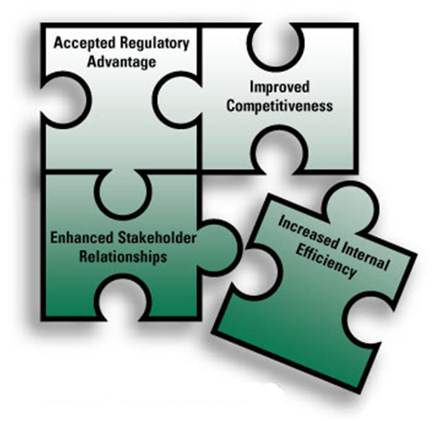

Environmental Management Systems (EMS)
Issue Overview
Best Practice
Benefits from an EMS
An EMS can be beneficial to any facility that:
Key Elements of an EMS
Facilities that have the potential to degrade or pollute the environment (e.g. soil, water, air) through their operations and activities should consider EMS as an effective management tool to reduce their environmental risks and improve their environmental performance and overall operational efficiency. Major steps and activities for establishing an EMS may include the following (adopted and modified from NSF 2001):
Environmental Policy:
The Environmental policy should provide an overview of the organization’s environmental commitments. The policy statement should include at minimum the following commitments:
- Continuous improvement in addressing environmental management issues;
- Pollution prevention and energy efficiency, and
- Compliance with relevant laws & regulations
Environmental Planning:
- Environmental planning should identify the environmental aspects and impacts of an organization’s activities and processes. Environmental aspects may include:
- Energy use
- Chemical and hazardous materials use
- Water consumption
- Wastewater production
- Solid and hazardous waste generation
- Sewage
- Air emission
- Sound/noise
- Waste disposal
- Identify relevant laws and regulations that the facility needs to comply with;
- Identify and establish environmental objectives and targets (i.e. numerical targets that can be achieved and measured) in line with the environmental policy and its environmental aspects and impacts;
- Establish an environmental management program including the necessary actions to achieve enunciated objectives and targets of the facility (e.g. reducing energy consumption by 10% by adopting a specific energy reduction program).
Implementation and Operation
Implementation and operation activities include:
- Establishing roles and responsibilities for environmental management and provide appropriate resources;
- Train facility staff so that they are aware of the facility’s overall environmental commitment as well as their own activities to improve environmental performance;
- Establish processes for the facility for internal and external communications on environmental issues;
- Record environmental management information and data;
- Ensure document control to effectively manage procedures and other system documents;
- Ensure operational control through identifying, planning and managing operations and activities in line with policy, objectives and targets;
- Identify potential hazards and develop procedures for preventing and responding to them during an incident.
Monitoring and Corrective Actions
Monitoring and corrective activities include:
- Monitor and measure key activities and track performance;
- Identify non-compliance issues and undertake corrective measures to prevent their reoccurrence;
- Maintain and manage records of EMS performance;
- Conduct audit to periodically verify that the EMS is operating as intended.
Management Review
Management review activities include:
- Review EMS activities and performance on at least an annual basis with an eye to continual improvement of the program;
- Establish new planning targets and goals as appropriate to drive continuous improvement.
EMS Certification Process
An organization may develop and implement an EMS but not seek international certification. However, in many cases, a third party accredited internationally certified EMS, such as ISO 14001, may bring many advantages and benefits.
ISO 14001 provides a framework for a holistic, strategic and systematic approach towards addressing an organization’s environmental management goals. ISO 14001 certification or another internationally accredited EMS (such as the Eco-Management and Audit Scheme, EMAS certification) is well-recognized by international buyers, regulatory agencies and the customers. This may result in helping a company achieve better business goals as well as a healthy working environment.
EMS Registration
An EMS can be registered in accordance with international standards, such as ISO 14001. An ISO 14001 registration may be important for facilities to demonstrate to their buyers that their environmental management standards act in line with the best international practices.